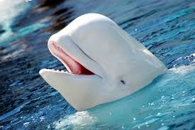
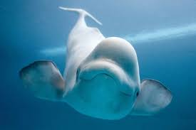

Our Top Eight Beloved Belugas
Meet our Top Eight Beloved Belugas.
Learn about their personalities and why we adore them!
hide
Harry
This cutie pie beluga is poking its head out of the water asking for some food. Harry is telling his trainer "Feed me please!"
Rosanna
Rosanna is the sweet and sassy beluga who likes to flip her fins out to say "Hello! Hope you have a nice day!" It is very rare we do not see her smile.
Danny
Danny loves to lounge around and chill with his good beluga friends. He enjoys going up to other sea creatures with a slight head tilt saying "Hey! What's up yo?!" He's cool but can be a little to laissez faire.
Charisma
Charisma is a super fun, bubbly beluga who loves to come out of the water and giggle with all her fun beluga friends. Sometimes she goes to the ocean and sometimes she will go hand out at different conservation shelters. She is sweet and will always help anyone in need.
Brandon
Brandon is a super fun kid! He is really curious about everything going on in the world. He can't go anywhere without a smile on his face and always sees the good in everybody.
Alex
Alex in general is a pretty shy beluga overall. But when he is with all of his young friends and other little ones he can be the light of the party. He loves swimming, and has been practicing since he was seven years old. He is also super smart.
Grace
Grace is a sweet and caring beluga, but she likes to have fun. Especially to her son Brian, who is behind her in this photo. She loves teaching the beluga language and has a masters in marine science.
Edward
Edward is the Uncle to everyone in the family. He is very smart, and very very nice. He knows a sense of unconditional love and really enjoys being silly. He loves flipping in the water and blowing water out of the hole.